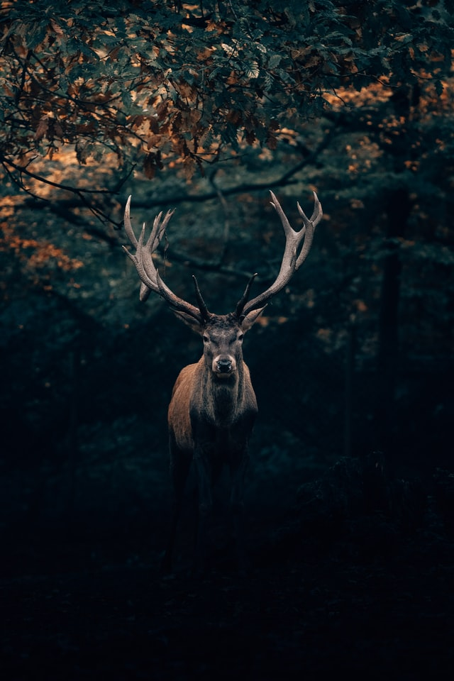

ANLMAL
DEER
사슴은
사슴과에 딸린 포유동물로, 몸길이 90~130cm, 몸높이 40~230cm, 몸무게 10~800kg으로 종에 따라 차이가 심하다. 뿔은 수컷에서만 볼 수 있고, 몸 색깔은 여름에는 갈색에 흰 점이 있으며, 겨울에는 짙은 갈색에 누르스름하고 희끗희끗한 점이 있다. 암컷은 수컷보다 약간 작고 뿔이 없다.
주로 봄에서 여름에는 나무의 싹이나 잎, 가을에는 도토리나 상수리 등의 열매를 먹고, 겨울이 되면 두릅나무 · 분비나무 · 참나무 등의 껍질을 먹는다. 위는 4개로 되새김질을 하며 제3위가 크고 쓸개는 없다.
번식 지역은 삼림 · 습지 · 황무지 · 사막 · 툰드라 등 매우 다양하며, 지대가 급경사진 곳보다 평탄하고 숨을 곳이 많은 곳을 좋아한다. 보통 무리를 지어 살며, 무리는 암컷과 새끼들로 구성되고, 수컷은 수컷끼리 무리를 짓는다. 10~11월이 되면 수컷끼리 싸움을 하여 이긴 쪽이 여러 마리의 암컷을 거느리고 살며, 암컷은 5~6월경에 1마리의 새끼를 낳는다. 사슴은 위험을 느끼면 궁둥이에 난 흰 털을 세워 같은 무리에게 위험을 알린다.
사슴의 뿔은 해마다 빠져 새것으로 바뀌고 가지가 벌어져 아름다운 모양을 이룬다. 어린 사슴의 뿔은 작은 혹 같고, 여러 해 자란 사슴의 뿔은 가지가 많다. 또한 이 뿔은 녹용이라 하여 한약재로 쓰이고, 뿔로 장식품을 만들기도 한다.
우리 나라 · 중국 · 일본 등지에 분포한다.
